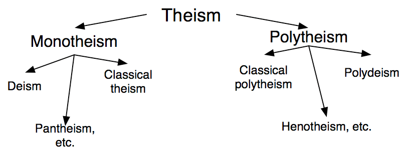

A theist is anyone who affirms a belief in god(s). There's different subsets of theists: (1) theists who believe in an intervening god (god of classical theism) and (2) theists who do not believe in an intervening god (god of deism, pantheism, etc.).
Here's a graphic I whipped up:
You are under no obligation to identify with / adopt labels you're not comfortable using.
This resource exists to determine the philosophical position that is technically the case for you (should you accept the word usages described).
I can certainly understand why some pantheists want to break off from the theism superset, but it doesn't make sense. If someone asks if you believe in god(s) and you say "yes", then you are a theist — a position that can be qualified with terms like "pantheist", "deist", etc. in order to distinguish yourself from classical theists.
Then don't use it.
I'm not a prescriptivist who thinks a word should have meaning by authority, but will argue that other labels are necessarily unstable (in terms of logical identity).
This being said, let's do what Matt Dillahunty recommends and chuck labels to the side if they're getting in the way of having an important conversation.
It's okay to change your mind. What's important is that you've taken time to reflect on your position.